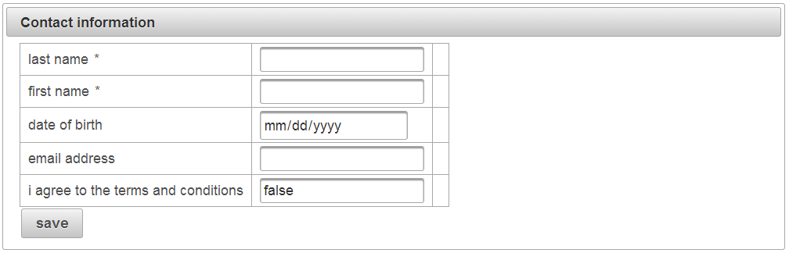

Automatic translation to foreign languages
AngularFaces 2.0 has been designed with foreign language support in mind. JSF always included support for internationalization, but it required a lot of boilerplate code.
Let's return to the car shop customer form:
This translate to a nice English version (well, usually there are a few glitches which can be ignored while your project is in its prototype phase):
To expand to the international markets, you'll have to provide translations to the texts. AngularFaces makes it very easy to do so.
Preparing your project
First you have to add the list of supported languages to the faces-config.xml. That's just the same procedure as in traditional JSF programming:
The next step is to define the language files. It's also the last step :).
The language files resemble the standard JSF language files. They are property files that have to be in the root folder of your classpath. AngularFaces uses a fixed name: it's always "i18n.properties". You can configure that differently (which is good, because you don't have to configure it in the first place).
More precicely, AngularFaces looks for the property files in a similar manner as JSF does:
- First, it looks for a file specific to your language and country, such as "i18n_de_at.properties" for Austrian German.
- If there's no such file matching your browser's locale settings, it looks for a file specific to your default language, such as "i18n_de.properties" for German (no matter which region your are from).
- If there's still no such file, AngularFaces simply uses "i18n.properties". By default, this file is assumed to be the English version, although you are free to use a different language if you insist.
- If the "i18n.properties" file is also missing, AngularFaces displays the original text. So in most cases, there's no need to provide an "i18n.properties" file containing the English translation. However, you can use this file to fix the glitches caused by the automatic "de-camel-casing" algorithm which guesses labels from JSF bean attribute names.
The language files
The language files drop several of the constraints give by standard JSF. You can use arbitrary keys. The idea is to simply use the original texts as keys. In a few cases you have to add extra attributes to get rid of ambiguous translations, but in most cases this approach works surprisingly good. The german translation file of our example looks like so:
You may or may not surround keys and translations with double quotes. Quotes are useful if the texts contain an "equals" sign.
How to modify your JSF file to benefit from the translation files
Now, that's the nice part of AngularFaces: you don't have to do anything to make your JSF files multiligual. Adding the language files and configuring the faces-config.xml is all you have to do to make the contact form look like this:


Which language is rendered depends on the locale setting of the users browsers. Putting it in a nutshell, every customer of yours' will see the JSF page in their language.